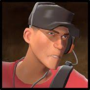
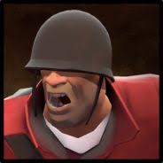
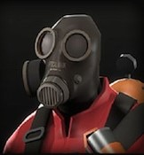
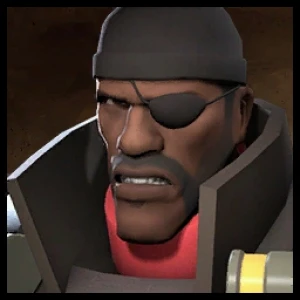
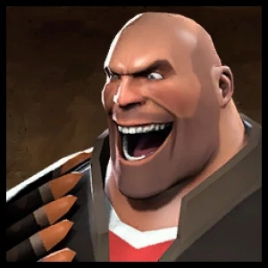
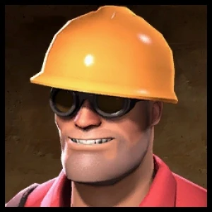
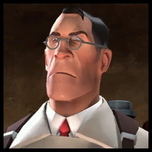
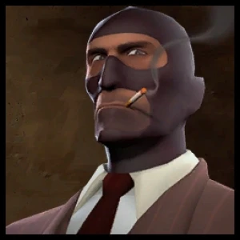

Скаут

Самый быстрый (ст. скорость) и ловкий персонаж в игре, но одновременно и один из самых сложных в игре. Он обладает очень низким здоровьем, получив взамен за это быструю скорость и двойной прыжок! Идиально подходит для захвата точек, поскольку получает бонус к скорости захвата!
Солдат

Старый вояка с огромной ракетницой, что может быть лучше? Имеет здоровье чуть выше среднего, но не думайте что вы будете живучее других, ведь у него есть одна особая техника..... Прыжки на РАКЕТЕ! Раньше это просто был баг в коде игры, но он стал довольно полезным, ведь он очень помогает в передвижении! (Вы бы видели что вытворяют профи....)
Поджигатель

Самый загадочный и (как по мне) лёгкий класс в игре! Он имеет при себе целый огнемёт, который очень хорошо помогает против классов! Его многие ненавидят из-за глупой тактики постоянной стрельбы, но не будем о плохом.
Подрывник

Самый весёлый класс в игре! У него есть два типа игры: первый, который задумывался разработчиками, играть через основное оружие - довольный сильный гранатомёт, но фандом придумал кое-что поинтересней..... Как насчёт взять огромный меч, воружится манёвренным щитом и пойти кромсать врагов?) Очень весёлое зрелище!
Пулемётчик

Этого "Hevy weapons guy" вы полюбому где-нибудь да видели! Ещё бы не видели, ведь он считается лицом всей игры и одновременно самым большим классом! Он имеет при себе самое большое количество здоровья и крутой пулемёт который может напугать даже самого крутого солдата!
Инжинер

Не нравится нападать и мчаться на врагов? Не нравится агрессивная игра? Этот класс для вас! Обычный техаский инжинер с очень необычным оружием, а точнее настоящяя турель! Для поддержки команды у него всегда есть удобный телепорт в гущу сражения и раздачик с боепипасами и аптечками.
Медик

Самый нужный и одновременно сложный класс в игре, а знаете почему? Да потому что это медик! Вы должны находится в гуще событий и всячески помогать своим товарищя лечив их прямо на поле боя! Но не думайте что вы беззащитный, ведь у него есть уберзаряд который делает его пациента и его самого бессмертными! Вот в такие момент стоит убегать подальше.
Снайпер

Даже в таком обычном классе есть свои камни. С одной стороны это обычный снайпер с винтовкой - целься в голову и нажимай на кнопочку, но помните что матч не стоит на месте! Именно поэтому многие выбирают "Боевых" снайперов, которые бегут в самую гущу событий! Чаще всего они выбирают лук - хоть и действует на таких же правилах что и винтовка, но в ближнем бою поудобнее.
Шпион

Ну и последний, шпион! Маскируйтесь под членов другой команды, заходите им в спину и дизорганизуйте их атаку! Специально для этого у вас есть оружие - нож, он очень удобен ведь он убивает в спину с первого удара. Довольно интересный класс для понимания логики врагов!